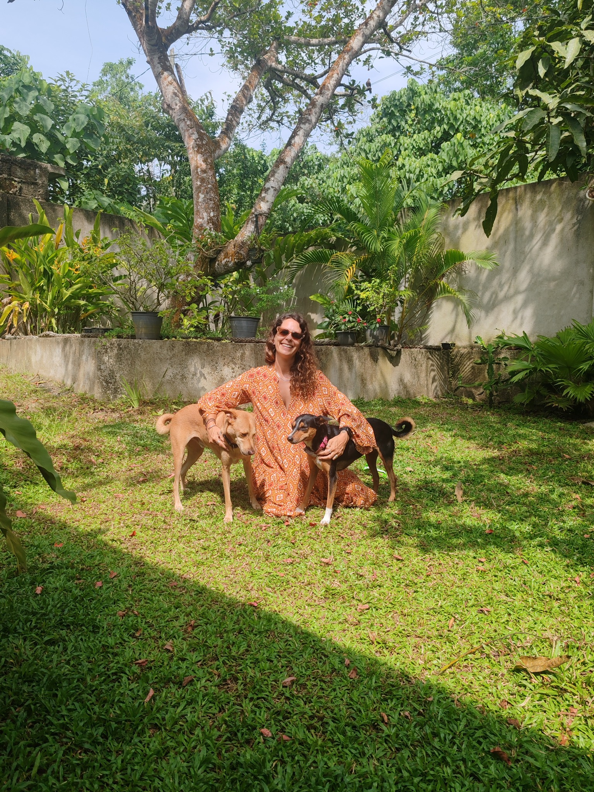

Helping people understand the dog behind the behaviour.
Behaviour support for people who want to understand their dog more deeply — not simply make them more obedient. I specialise in free-living and village dogs, fearful and anxious dogs, and dogs whose independence or sensitivity doesn’t always fit neatly into life inside a human home.
Your dog is not a problem to solve.
When behaviour becomes difficult, it’s easy to focus on what needs to stop: the barking, lunging, fear, inability to settle, or refusal to cooperate.
But behaviour is information. My work begins by looking at the dog underneath it: their emotional state, history, environment, motivations, relationships and individual needs.
A more useful question is: “Why does this behaviour make sense for this dog?”
Welfare first — for both the human and the dog.

Welfare before obedience
Your dog’s wellbeing matters more than how compliant they appear.

Relationship over control
The goal is communication and trust, not a dog who follows every instruction.

Understand before we change
The same behaviour can have different causes. We look at the dog producing it.

Learning from dogs who still have a little more choice.
Living and working alongside free-living dogs in Sri Lanka has profoundly shaped how I understand canine behaviour.
They choose who they interact with, negotiate conflict, communicate boundaries, form relationships, avoid situations they don’t trust and make decisions for themselves.
I support guardians of village and free-living dogs who are navigating the enormous transition from a more autonomous life into a human household.
Learn more about my approach →Adopted a street or village dog and not sure where to start?
Most adopters make the same handful of mistakes in the first few weeks — before they've had a chance to understand what their dog actually needs. Get my free guide: 5 Common Mistakes Street Dog Adopters Make — and what to do instead.
Support built around the dog in front of us.
There isn’t one protocol I use for every fearful, reactive or anxious dog. We look at the whole picture and decide what kind of support will actually help.
The Clarity Plan
Understand what is happening and know what to do next.
For guardians who need help making sense of their dog’s behaviour, identifying what may be driving it and creating a clear way forward.
Explore the Clarity Plan →The Transformation Journey
Work with me over time on a complex or persistent behavioural pattern.
For cases that need ongoing assessment, observation and adaptation rather than a single plan.
Explore the Transformation Journey →Hi, I’m Vanessa.
I’m a dog behaviour professional based in Sri Lanka, where I’ve spent years living and working alongside free-living dogs.
My work brings together formal behaviour education, six years of CNVR and rescue experience, academic research, and the kind of learning that only comes from watching dogs navigate their own social worlds.
Bambi and PingPong were the propellers of my path into behaviour — pushing me to ask better questions about fear, communication, autonomy, trust and relationship.
I hold a Level 5 Diploma in Dog Behaviour & Psychology and have completed the Aggression in Dogs Master Course. My thesis, Beyond Rescue: Evaluating the Suitability and Sustainability of Free-Living Dogs as Pets, explored what happens when free-living dogs transition into human homes.
Read my story →Thinking differently about dogs.
Essays, observations and practical resources exploring dog behaviour, free-living dogs, relationships, welfare and what happens when human expectations meet canine reality.
Kind words from clients living the work.
A few reviews from people I have supported with village dogs, rescue dogs and complex behaviour cases.
She has such a unique and deep understanding of village dogs, and dog behaviour and psychology in general. Vanessa was able to help us understand our pups so much better than we ever imagined possible.
I worked on my dog’s anxiety and attachment with Vanessa for a month and I drastically saw the improvements. She is very tuned in to your dog’s needs and gives you precise perspective and tips all along the way.
Thanks to Vanessa, I gained a deeper understanding of Sri Lankan stray dogs and of my own dog who was rescued here. She gave me a clear plan and practical tips that have made life easier for both of us.
Our dog Dobey went from barking, charging and snapping at anyone through our gate to being cautious, sniffing, wagging his tail and coming back to us. We feel much more confident keeping friends safe. Words cannot express how knowledgeable, nuanced and empowering Vane is.
Tell me a little about your dog.
You don’t need to know which service you need before reaching out. We’ll work out whether I can help and what support makes sense.